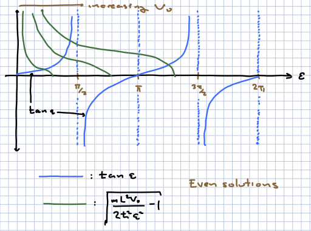

The 1d square well#
The square well allows us to illustrate some basic aspects of the physics and mathematics of bound states, especially the important role of boundary conditions. We will close with some observations on symmetry and degeneracy.
We will focus on one-dimensional bound states here (and for the rest of this section).
The infinite square well#
This is the classic “particle in a box” problem. We consider the potential
We wish to solve the time-independent Schroedinger equation in this background. For finite energy, it is clear that to solve it for finite \(E\), \(\psi(x)\) must vanish for \(|x| > L/2\). We also demand continuity so that the left hand side of \(H\psi = E\psi\) contains no delta function singularities. \(\psi(\pm L/2) = 0\). We thus consider wavefunctions which satisfy Dirichlet boundary conditions.
For \(|x| \leq L/2\), we write \(y = x/L\) and \({\cal E} = \frac{2 m E}{\hbar^2 L^2}\) to get the equation
with boundary condition \(\psi(y = \pm \half) = 0\). The general solution to the above equation is, before imposing boundary conditions,
Note that the cosine function is even/symmetric on the line, and the sine function is odd/antisymmetric. These do not satisfy the boundary conditions for every \(\CE\); the eigenvalues are fixed by the boundary conditions. The allowed values are
Note that the lowest-energy state is the even wavefunction with \(n = 0\); the eigenfunctions are alternating even and odd. Rescaling we can write the two possibilities as
and
Parity-symmetric potentials#
The case above is one of a general class of parity-symmetric potentials for which \(V(x) = V(-x)\). Let us explore the consequences of this.
We can define the parity operator as:
This is compatible with \(\Pi {\hat x} \Pi = - {\hat x}\) and \(\Pi {\hat p} \Pi = - {\hat p}\). The latter follows from \(\frac{\del}{\del (-x)} = - \frac{\del}{\del x}\). This \(\Pi H \Pi = H \Rightarrow [H,\Pi] = 0\).
You can show that \(\Pi\) is a Hermitian operator (it is also unitary). Thus, we can diagnonalize \(H\) and \(\Pi\) simultaneously. Since \(\Pi^2 = 1\), its eigenvalues \(\sigma\) must satisfy \(\sigma^2 = 1\). Since \(\Pi\) is Hermitian, \(\sigma\) is real, so \(\sigma = \pm 1\). If \(\sigma = 1\), the wavefunction is even; if \(\sigma = -1\), the wavefunction is odd.
This is a baby example of the consequences of symmetries; they allow us to organize the solutions to the TISE.
The finite square well#
Next we consider the potential
If we were to shift the total energy by \(V_0\) and then send \(V_0 \to \infty\) we would recover the previous case.
We will consider solutions with \(E < 0\), which as we will see correspond to bound states. At the end we will briefly discuss the case \(E > 0\), but defer a full mathematical explanation to a discussion of scattering.
For \(|x| > \frac{L}{2}\), we have the equation
The general solution to this equation is
Note that if \(V_0 = 0\) there would be no solution; one or the other exponential would lead to a divergence in the norm of \(\psi_E\); these are not square-integrable functions. The exponential behavior is typical of wavefunctions in a classically forbidden region (\(E < V(x)\)) of the potential
If \(V_0 \neq 0\) it is a different story. Let us focus on \(- V_0 < E < 0\). We will revisit \(E < - V_0\) (there will be no solution for basically the same reason). If \(|x| \leq \frac{L}{2}\), the general solution to the TISE is
This solution needs to be matched to the solutions for \(|x| > L/2\).
To do so we take normalizability into account to demand that the wavefunction decays exponentially at infinity and write:
At each of \(x = \pm \frac{L}{2}\) we make two demands:
Continuity:
This ensures that derivatives of \(\psi\) have no delta function signularities, and thus that \(\del_x^2 \psi\) has no singularities of the form \(\delta'(x)\). The latter would make the TISE impossible to solve since \(E\psi\), \(V\psi\) are finite.
Continuity of first derivatives:
This ensures that \(\del^2\psi\) has no delta function singularities.
The result here is four complex equations in four complex unknown \(A_{I,II,II}, B_{II}\). Note that these are homogenous equations; for any solution, \(\lambda A_{I,I,III}, \lambda B_{II}\) are also solutions. Imposing normalizability gives us a fifth real equation, and we can fix an overall phase to promotte this to 10 real equations in eiught real unknowns. Alternatively, we can just fix \(A_I = I\) (for example) and then we get 4 complex equations in three complex unknowns.
The equations are thus underdetermined. The basic reason for this is that we have imposed boundary conditions at \(x \to \pm \infty\), so that the wavefunction is normalizable. If we did not do this, we would have two additional complex constants to adjust, corresponding to the coefficients of the growing exponentials, and solutions would exist for any \(E\).
I will not go into detail in solving the matching conditions. These are well coveredin the text, or in a decent undergraduate textbook (I grew up with Gasiorowicz but there are many.) As we discussed above, we can break the solution into two types.
Even solutions. Here \(A_{II} = B_{II}\) and \(A_I = A_{III}\) Equivalently we can write the solution for \(|x|< L/2\) as \(\psi = C_{II} \cos k x\). We then only have to impose the continuity conditions at \(x = L/2\) (or equivalently \(x = - L/2\)), giving two complex homogenous equations in two unknowns, which is overdetermined as above. Dividing the equation for continuity of the wavefunction by the equation for continuity of the first derivatives, the constants \(A,B\) drop out and we are left with a transcendental equation
To simplify this we define
so that the transcendental equation becomes

Looking at the structure of the equations and comtemplating the figure above we can work out that, first, there is always at least one solution for any \(V_0\), in this case an even solution. It will always be the lowest-energy solution (we have to compare this to the odd solutions to verify this fact). This is a general feature of attractive potentials in one dimension. As we increase the depth \(V_0\) of the potential well, additional bound states will appear. But in general there will only be a finite number.
Odd solutions. In this case we can replace the wavefunction in the central region \(|x| < L/2\) with \(C_{II} \sin kx\) and set \(A_{II} = - B_{II}\). Again, we are left with two complex homogenous equations at \(x = L/2\) (or \(x = - L/2\)) in two unknowns. Again, we are left with a transcendental equation

Here we can see that for small enough \(V_0\) there will be no solutions; solutions will start to appear as we increase \(V_0\).
We can also show, by overlaying these pictures, that solutions will again alternate between even and odd. The story is actually more general; for any attractive potential, the \(N\)th bound state energy level (where \(N = 0\) is the ground state) will have \(N\) nodes in one dimension. This is a result that pertains to bound states which vanish at infinity, and for which the energy spectrum is discrete. A nice simple argument for this, with references, can be found in [Moriconi, 2007]. The essential point is that one can focus on a region in the interior of the potential and bound it by infinite walls. Even if \(V(x)\) ius curved, if we make teh allowed region small enough, teh curvature is irrelevtn and we basically have the infinite square well problem se already solved above. We already know how to solve this problem, and the wavfunctions have the characteristics we are after. Now start to separate the walls slowly towards infinity. The only way for the number of zeros to change is if a single zero appears or disappears, requiring that the wavefunction and its derivative vanish; or two zeros coalesce, in which case the wavefunction and its derivative vanish. But the Schrodinger equation is second order in space, and the conditions given completely determine the solution. Since a vanishing wavefunction is a solution whose value and first derivative vanish at a point, this is the unique solution satisfying these conditions. But if we assume that the wavefunctions are all nontrivial for any separation then this is impossible, and the number of nodes cannot change. In the meantime, as discussed in Commins, there can be no degeneracy in the one-dimensional problem, the energy levels cannot cross.
We close with a few comments.
Note that the quantum wavefunction has support in the classically forbidden region. This is typical. However, if we mwasure the location of the particle with sufficient resolution, and the particle is found in this region, the average energy of the particle will be above the barrier.
For \(E < - V_0\), there are simply no normalizable solutions. The solutions in each regions are real exponentials, and there is no way to join them so that they fall off at large \(|x|\).
For \(E > 0\), the solutions in all regions are oscillating exponentials. Eigenfunctions of the Hamiltonian come from piecing together plane wave solutions, and are not normalizable – in general they are delta function normalizable. We can specify that the solution goes as either \(e^{i k x}\) or \(e^{- i k x}\) at infinity, where \(E = \frac{\hbar^2 k^2}{2m}\). There are still 5 remaining coefficients governing the wave equation in different regions, subject to 4 homogenous matching conditions. The matching conditions will have a solution for any \(E> 0, V_0\), and thus we have a continuum of solutions, just as in the free particle case.
Lack of degeneracies#
One other aspect of both problems aove is the absence of any degeneracy. This is a general feature of 1d bound state problems when the potential wells are finite. The argument is straightforward and given by Commins.